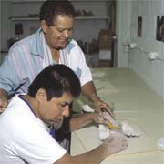

Volunteer Information  HOME HOME |
The Center is always in need of assistance, whether it be monetary assistance or volunteer time. We need the help of individuals, community groups, foundations and corporations. How would you like to make a major difference in the life of a visually impaired person?
- You Can.
Your cash gift strenghtens our ability to help people who have lost all or part of their sight to regain their independence and make the most of their lives.
- No Gift Is Too Small.
Any Gift Will Make A Difference To The People We Serve.
The center relies on volunteers to provide many of our services and to assist in the implementation of our programs. Without volunteers it would be impossible to provide the same quality of services to those in need.
- Volunteers Are One Of Our Most Valuable Resources.
The Greatest Gift A Person Can Give Is The Precious Gift Of Ones Time.
Your generosity is greatly appreciated whether it is the gift of money or the gift of time. For more information regarding our volunteer program or for donor information please contact Veronica Wilson or Catherine Law at 642-6000 or via Email at contact@blindcenter.org.
|